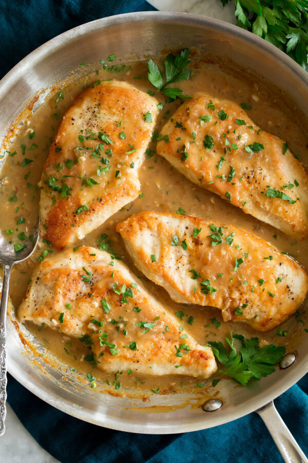

Aunt Laura's Chicken and Wine

Aunt Laura's chicken and wine was created to
address the surplus of white wine that Aunt
Laura had in her liquor cabinet. She much
preferred to drink red wine, and thus white
wine was reserved for cooking purposes.
Ingredients:
- 6 Chicken Tenderloins
- White Wine
- Olive Oil
- 4 Large Onions
- 3 tbsp Parsley
- 2 1/2 tbsp Basil
- 2 tbsp Garlic Powder
- 2 tsp Salt
- 3 tsp Pepper
Steps:
- Cut cicken into chunks and rinse
- Coat bottom of electic skillet with oil and turn
temperature to 350 degrees Fahrenheit
- Slice onion
- Combine chicken, onion, salt, pepper, garlic powder, parsley, basil
- Add to skillet and cook until browned (Add water if dry)
- Add all of the wine and cover skillet halfway
- Simmer for 10 minutes